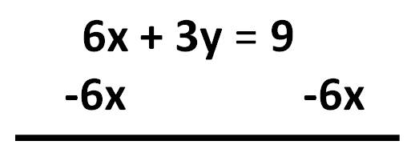
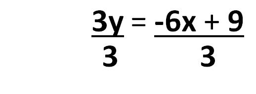
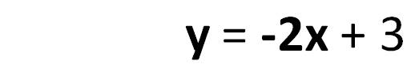
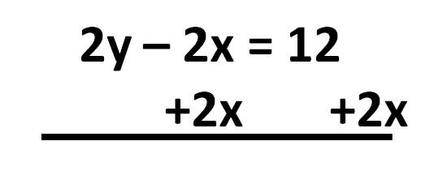
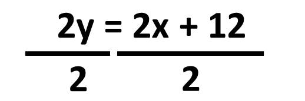

Systems of Equations
6x + 3y = 9
2y - 2x = 12
What is the solution to this system of equations?
To see what’s going on here a little bit better, it might help to rearrange the equations.
Both equations involve x and y, so we can make them into linear equations. We just need to get y alone on the left side.
We subtract 6x from both sides.
Click on the equation to see this in action

Then we divide both sides by 3 to get y alone.
Click on the equation to see this in action

This gives us the line...

We can do the same thing to the second equation.
We start by adding 2x to both sides.

Then we divide 2 from both sides to get y alone.

This gives us the line.